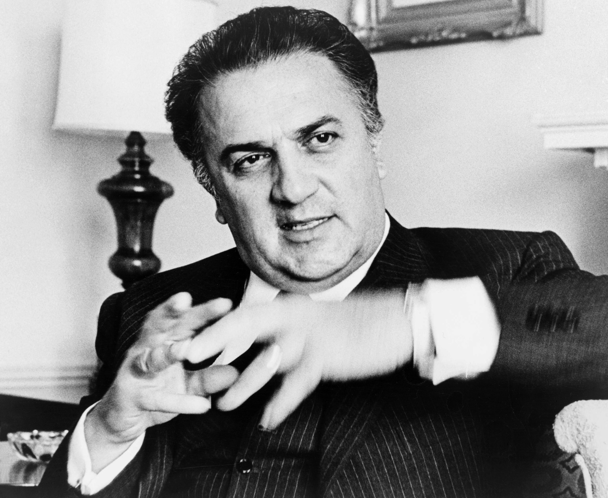
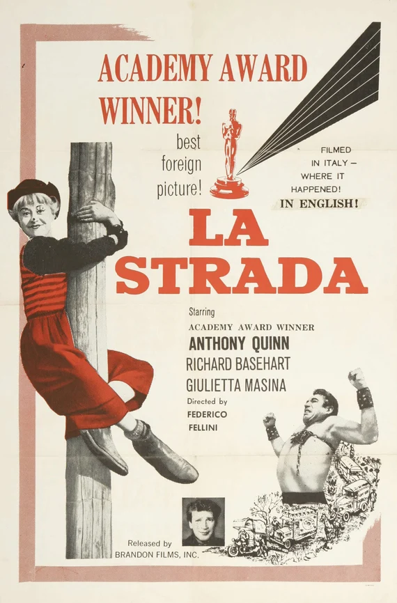
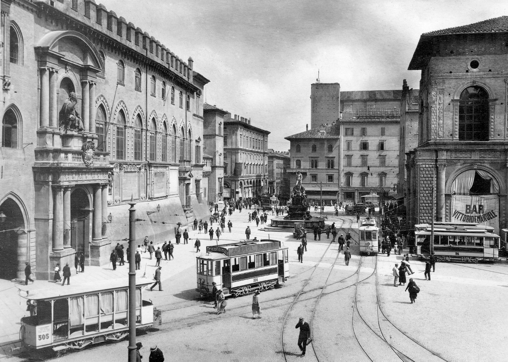
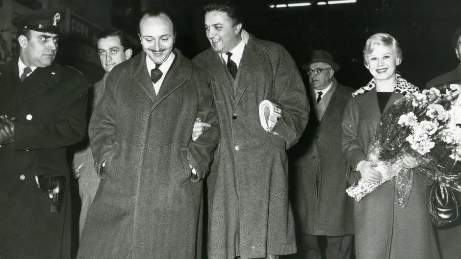
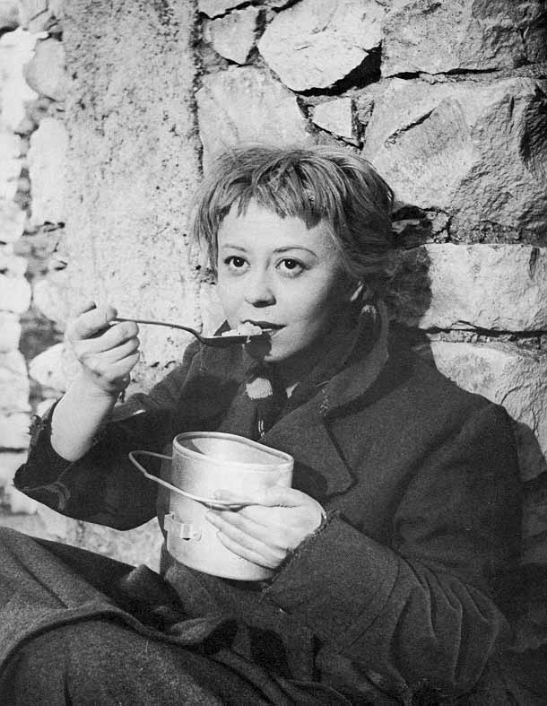
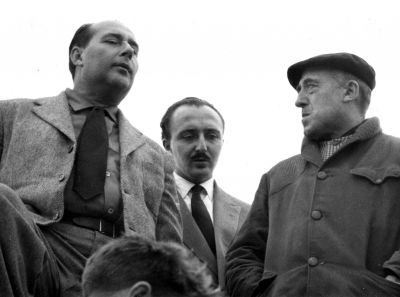
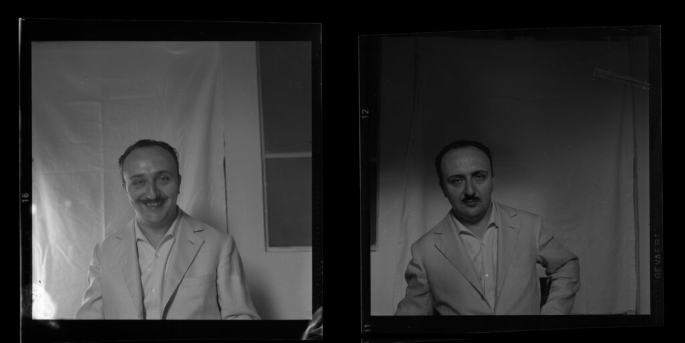
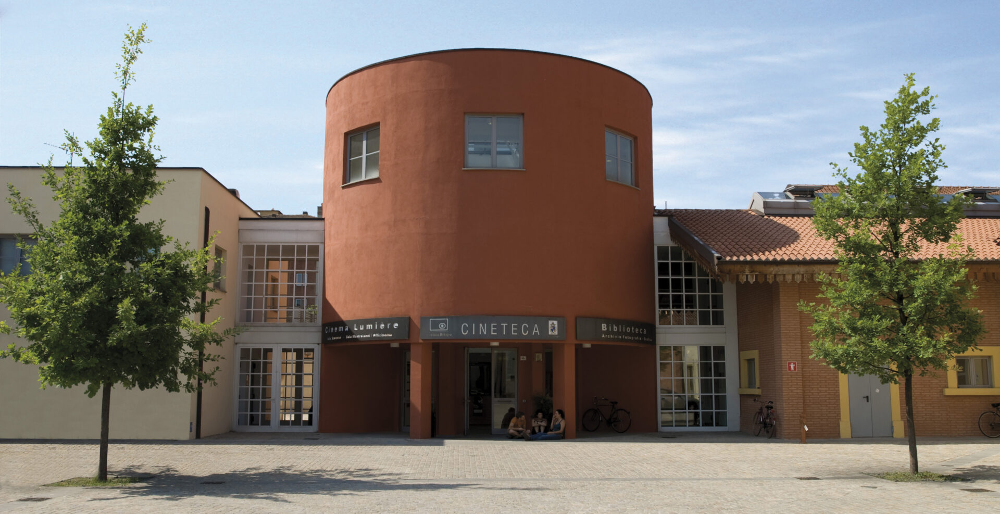
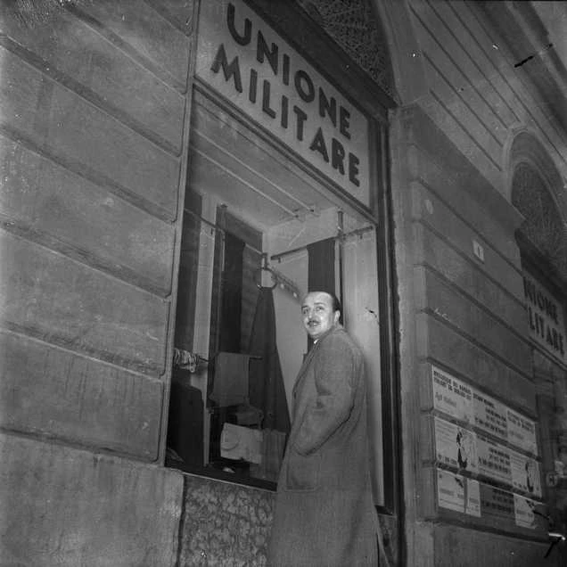

Overview
The “Revolussion” of Renzo Renzi is a digital humanities project exploring the archival universe of Renzo Renzi (1919–2004), a film critic, writer, cultural communicator, and organizer.
The project integrates:
- TEI/XML scholarly text encoding
- XSLT transformation for web publication
- CSV–based metadata extraction and analysis
- Linked Open Data modelling (RDF/Turtle)
- Reuse of major cultural heritage standards (ISBD, ICCD, FIAF, ISAD(G))
- A conceptual model inspired by DC Terms, Schema.org, FOAF, RiC-O, CIDOC CRM
- A web interface presenting all deliverables
The dataset includes 15 heterogeneous cultural heritage items (books, photographs, drawings, sound recordings, interviews, documents) described, encoded and semantically linked.
Items & Selection
The project focuses on objects connected to La Strada and to Renzo Renzi’s critical and curatorial work. Below you can explore the full selection.
| # | Item | Type | Holding institution / provider | Institution / Chosen metadata | Source link |
|---|---|---|---|---|---|
| 1 | Il primo Fellini (Renzo Renzi) | Book (full text) | Cineteca di Bologna / Biblioteca Renzo Renzi | SBN-MARC / MODS | XML |
| 2 | Sceneggiatura manoscritta di "Guida per camminare all'ombra" | Screenplay / archival record | Cineteca di Bologna / Renzo Renzi Library | - / EAD | XML |
| 3 | Bologna. Cinema Fulgor. Premiere of La Strada | Photograph | Cineteca di Bologna / Fondo Iniziative Cineteca | - / VRA Core | XML |
| 4 | La Strada: Gelsomina col tamburo | Drawing | Cineteca di Bologna / Renzo Renzi Collection | - / VRA Core | XML |
| 5 | Caricature “Perché Federico non fa la rivolussione?” | Drawing / caricature | Cineteca di Bologna / Renzo Renzi Fund | - / VRA Core | XML |
| 6 | Set photograph from Le notti del Melodramma | Photograph | Cineteca di Bologna | - / VRA Core | XML |
| 7 | Circus performance scene from La Strada | Photograph | Cineteca di Bologna / Fondo Fotografie Cineteca | - / VRA Core | XML |
| 8 | Gelsomina eating bread in rural landscape | Photograph | Cineteca di Bologna / Fondo Fotografie Cineteca | - / VRA Core | XML |
| 9 | Il cinema a Bologna: Renzo Renzi e la Columbus film (2000) | Video interview | Cineteca di Bologna | - / MODS | XML |
| 10 | La strada (film) | Film | Cineteca di Bologna | - / MODS | XML |
| 11 | La strada: musique du film (Nino Rota) | Sound recording | Cineteca di Bologna | SBN-MARC / MODS | XML |
| 12 | Portrait of Renzo Renzi | Photograph | Cineteca di Bologna / Renzo Renzi Fund | - / VRA Core | XML |
| 13 | Quando il Po è dolce (1952) | Documentary film | Cineteca di Bologna | - / MODS | XML |
| 14 | Biblioteca Renzo Renzi | Institution / Library | Cineteca di Bologna | SBN-MARC / Schema.org | JSON‑LD |
| 15 | Letter to his father (24 July 1942) | Letter / archival record | Cineteca di Bologna / Renzo Renzi Library | - / EAD | XML |
Each object is described in CSV, mapped to cultural heritage standards, and transformed into RDF according to the project’s conceptual model.
Theoretical Graph
Theoretical model describing entities and their relationships within the Renzo Renzi domain.
Interactive theoretical graph created with Miro.
Conceptual Graph
Conceptual representation of classes and relationships used in the project, based on ontological reuse (DCTerms, Schema.org, FOAF, CIDOC CRM, RiC-O).
Interactive conceptual graph created with Miro.
Descriptive Standards
For each item we identified the descriptive practice adopted by the holding institution and reused it as the starting point of our modelling.
- ISBD(G), ISBD(NBM) · bibliographic items and non-book materials
- Scheda F / Scheda OA (ICCD) · photographs, drawings, caricatures
- ISAD(G) · archival records
- FIAF Cataloguing Rules · film-related materials
Ontologies & Vocabularies
- Dublin Core
- Schema.org
- FOAF
- CIDOC CRM (reference model)
- RiC‑O (archival conceptual reference)
TEI Edition & HTML
The project includes a TEI P5 encoding of a portion of the screenplay of La Strada, taken from Il primo Fellini.
- a complete
<teiHeader>with bibliographic and archival metadata - semantic tags for people, places, and film-specific structures
- a transformation pipeline from TEI/XML to HTML via XSLT and RDF via Python
The HTML version can be consulted in the “La Strada” edition page.
RDF Dataset & Linked Open Data
CSV metadata are transformed into RDF using dedicated Python scripts (based on rdflib). Each
cultural heritage item is exported as an individual Turtle file, resulting in a modular Linked Open Data dataset.
The RDF representation includes:
- creative works, photographs, drawings, sound and moving images
- agents and institutions (Renzo Renzi, Federico Fellini, Cineteca di Bologna…)
- events such as productions, interviews and film-related activities
- links to external authority files (VIAF, Wikidata, GeoNames)
All Turtle files can be consulted and downloaded from the project’s RDF dataset directory .
The “full dataset” file aggregates the project triples for easier inspection and evaluation.
Photo Gallery
A small visual tour through the archival universe of Renzo Renzi: Federico Fellini’s cinema, La Strada, Bologna, and the people and places that connect them.









Team
The project was developed within the course Information Science and Cultural Heritage (2024–2025), held by Marilena Daquino and Francesca Tomasi at the University of Bologna.
-
Laura Bortoli
laura.bortoli@studio.unibo.it
GitHub: lauraaa13 -
Claudia Romanello
claudia.romanello@studio.unibo.it
GitHub: claudiarom -
Qinghao (River) Chen
qinghao.chen@studio.unibo.it
GitHub: River-Qinghao
Supervision
Text Encoding & Semantic Representation
Marilena Daquino
Knowledge Organization in Libraries & Archives
Francesca Tomasi
Documentation & Downloads
Core project documentation, data files, and code used to generate the TEI edition and RDF dataset.
- README (project overview)
- Project Documentation (workflow & metadata analysis)
- CSV metadata (all items)
- RDF dataset (full): full_dataset.ttl · Raw mirror · TTL directory
- TEI/XML source for La Strada: XML · HTML edition · GitHub repository